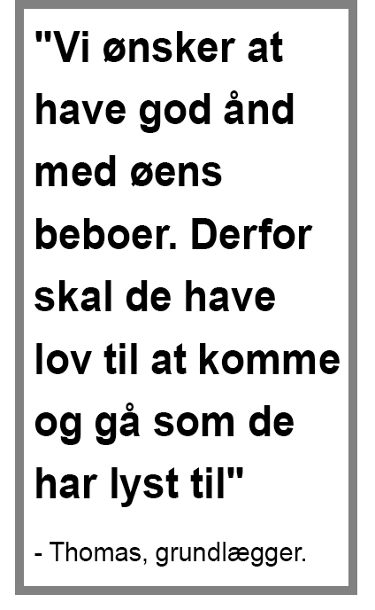
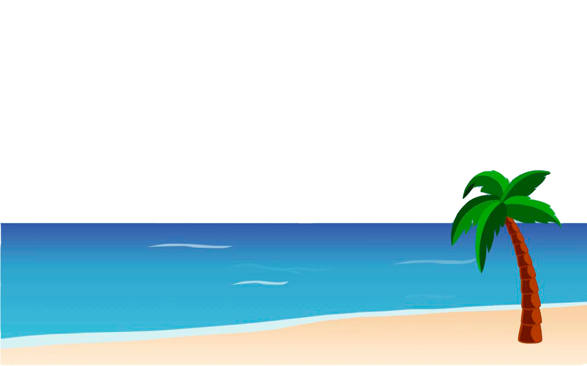
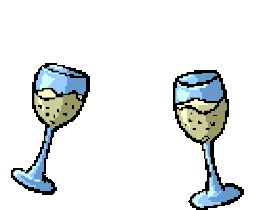

Vi er en rejsedestination, der tilbyder dig en unik rejseoplevelser på Filippinerne. Vores vision er at skabe en rejseoplevelse, som du aldrig kommer til at glemme. Rejserne handler om at trække stikket ud, at komme i kontakt med sig selv, at afprøve nye grænser og møde en ny kultur du ikke kender hjemme fra. For os, som rejsedestination, er det ligeldes vigtigt at gøre noget godt for de mennesker på Filippinerne, der er så venlige at lade os komme på besøg. Vi vil gerne, at alle parter får udbytte af vores rejser og vi ønsker at fastholde den autentiske stemning vi tilbyder på vores rejser.
Så hvis du er eventyrlysten og nysgerrig på nye, spændende og autentiske oplevelser? så rejs med Amazing Philippines og få oplevelser du aldrig glemmer!
En autentisk rejse for alle aldre
Island houseIsland House er en øde ø midt ude i ingenting. Trænger du til at trække stikket ud og gå offline, så er Island House valget for dig. På øen vil du bo du med en lokal værtsfamilie i de smukkeste omgivelser. Værtsfamilien vil sørge for mad og forplejning og giver en hånd når der er brug for det. I det hjemmebygget åbne hus er der køkken, badeværelse, hyggelige værelser og egen terrasse. Du vil selv have mulighed for at bestemmer, hvordan dagene under dit ophold vil komme til at se ud. Der vil både være mulighed for morgenyoga i bambushytten, eftermiddags læsning på stranden eller en tur i vores kajakker.
Secret houseSecret house ligger placeret i Sule Sea, langt væk fra turister og internetforbindelse. På Secret Island er du offline og lever i nuet. På naboøens ø ligger der en lille landsby, hvor du har mulighed for opleve den ægte Filippinsk kultur. Lokal arbejdskraft vil sørge for mad og forplejning under opholdet. På Secret Island er kite-surfing og vind det vigtigste. Vi har dygtige instruktører, udstyr, og et kitespot på 500 meter, der danner de perfekte rammer for dit ophold. Hvad end du er nybegynder eller øvet, vil Secret Island være noget for dig. Desuden tilbyders der også paddle surfing, volleyball, snorkling, dykning og en sejltur i kajak.

Øerne der blev betalt med rom
Eventyrlystne kammerater Thomas Munk og Kim Block Jakobsen er mændene bag Amazing Philippines. Hele projektet startede tilfældigt tilbage i 2013, hvor de to kammertarer var ude at sejle omkring øen Popototan. Øen var lige blevet ramt af en voldsom tyfon. Thomas og Kim bliver her stoppet af lokale mænd, der ville høre om de kunne undvære lidt penge til dem og deres familier. Hertil svarede de, at de ikke ville give dem penge. De ville dog gerne give dem ris mm. så de selv kunne begynde at opbygge noget af det tyfonen havde ødelagt. Fordi som Thomas siger: "Det er bedre at lære filippinerne at fiske en blot at give dem 10 fisk.
Skål Thomas og Kim kom tilbage til øen et par dage efter. Her mødte de den lokale mand, der ejer øen. Han fortale dem, hvordan han for mange år siden havde købt øen for 7 flasker rom. Sådan 7 falske rom er meget værd for en filippiner. Hertil svarede Thomas for sjov, at hvis han nu gav det dobbelte antal rom, om han så ville sælge øen til ham. Det grinede de lidt af. Et par dage efter kom ejeren af øen dog tilbage og spurgte om han mente det han havde sagt. Det endte med, at Thomas og Kim fik lov til at leje øen i 50 år.
Samarbejdet med de lokale Det er på denne måde Amazing Philippines startede. Det ligeledes med baggrund i dette, at det vigtige samarbejdet med de lokale filippinerer opstod. De fleste af vores faciliteter såsom Island House er bygget sammen med de lokale, og på den måde har vi hjulpet hinanden, så de også har kunne opbygge deres ø efter tyfonen. Derfor er det vigtigt for os, at give noget tilbage til filippinerne. Alle skal vinde noget i dette projekt. Det gør vi bl.a. ved at gæsterne kan tage ind og lege med børnene, lære dem at svømme eller lære dem engelsk.


Unikt og spændende at være en del af - Pi, tidligere rejsende
"Alle mennesker fortjener at koble ud engang imellem" - Tobias, tidligere rejsende
Det et sted alle mennesker burde opleve - Laura, tidligere rejsende